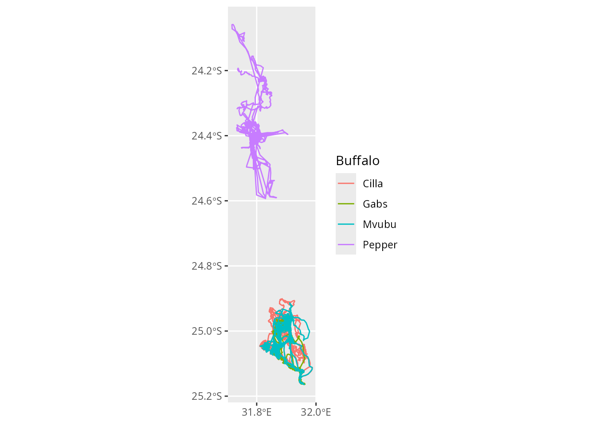
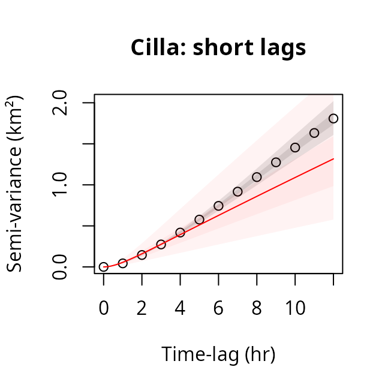
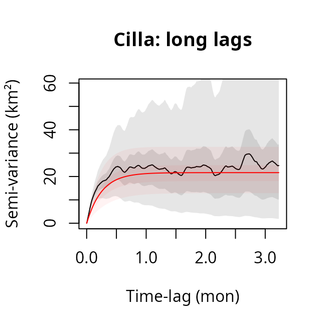
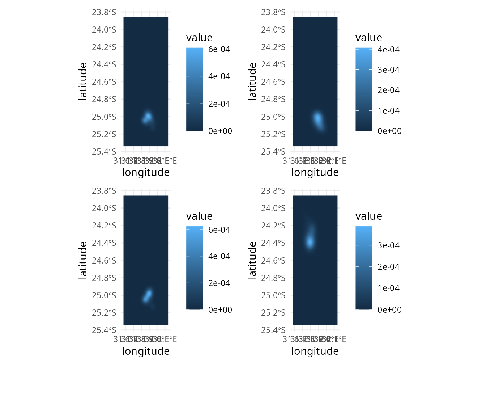
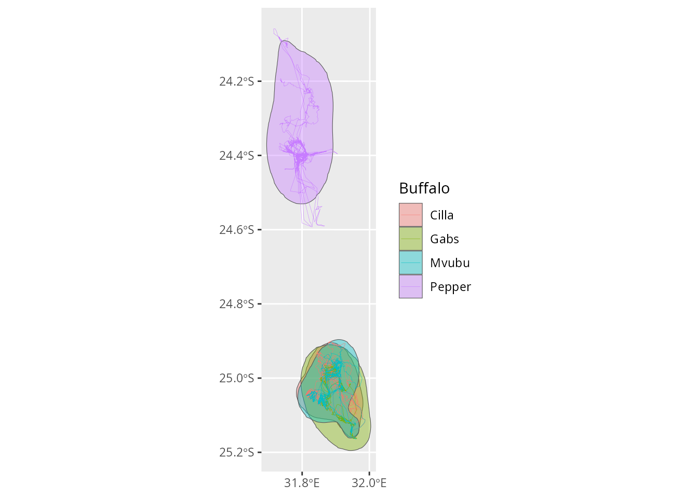
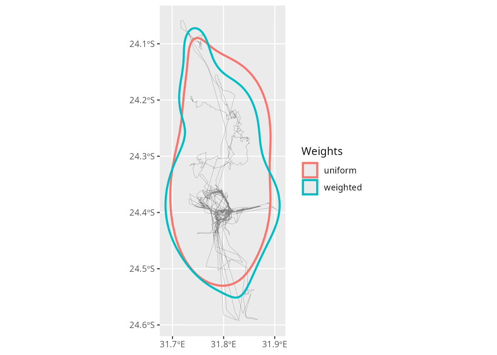
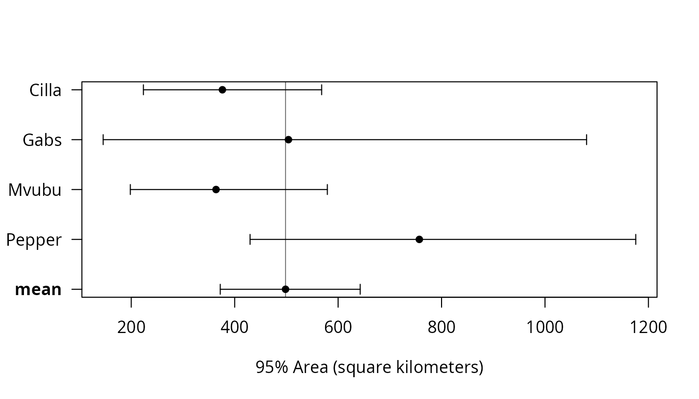
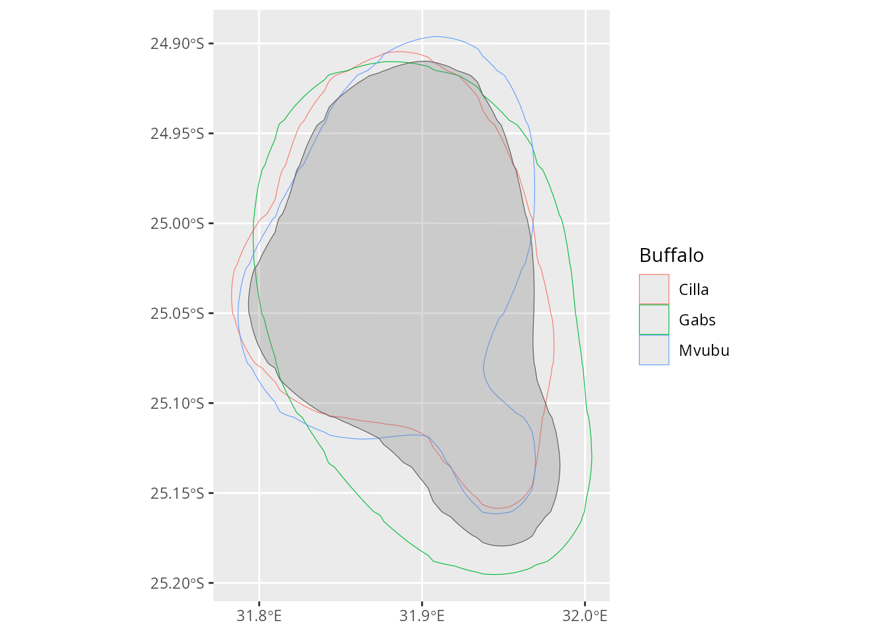

The package ctmm
implements continuous-time movement models, which describe how the
locations of an animal are correlated in time. Tracking data are
strongly autocorrelated (consecutive locations are close to each other),
and methods that assume independent locations, such as conventional
kernel density estimation (KDE), underestimate home ranges and their
uncertainty. Continuous-time movement models account for this
autocorrelation, and are the basis of methods such as autocorrelated
kernel density estimation (AKDE, Fleming et al. 2015).
tidytracks provides an interface to ctmm
that follows a simple, modular workflow:
- prepare a tibble of tracks in a projected coordinate reference system;
- fit a movement model to each track with
ctmm_tt_fit(), which returns a table of models with one row per track, in the same order as the metadata; - inspect and summarise the models
(
ctmm_tt_summary()); - use the models, together with the tracks, for further analyses, such
as estimating home ranges with
hr_tt_akde().
In this article, we follow the examples of the ctmm
vignettes, using the same data, to show how this workflow fits with the
rest of tidytracks.
The data
We use the GPS tracks of African buffalo (Syncerus caffer)
from Kruger National Park, South Africa (Getz et al. 2007, Cross et
al. 2016), which are also used in the ctmm vignettes
(ctmm provides them as a list of telemetry
objects, which can be converted to a tibble of tracks with
mt_as_move2()). Fitting movement models to long tracks
takes a few minutes per track, so, to keep this article quick to run, we
use four of the six buffalo of the dataset: Cilla, Gabs and Mvubu, which
share an area in the south of the park, and Pepper, whose GPS collar
changed its sampling schedule (see below).
The tracks are stored in a CSV file, with one row per location: the
id of the buffalo (buffalo_id), the time in UTC
(date_time), and the longitude and latitude
(lon and lat). The file also includes the sex
and the age class of each buffalo (sex and
age; they are all adult females). As these values are
repeated for all the locations of a buffalo, tt_read_data()
moves them to the metadata of the tibble of tracks:
buffalo_tt <- tt_read_data(
events = "data/buffalo_tracks.csv",
col_track_id = "buffalo_id",
col_coords = c("lon", "lat"),
col_date_time = "date_time"
)
buffalo_tt
#> A <move2> with `track_id_column` "buffalo_id" and `time_column` "date_time"
#> Containing 4 tracks lasting on average 147 days in a
#> Simple feature collection with 9820 features and 2 fields
#> Geometry type: POINT
#> Dimension: XY
#> Bounding box: xmin: 31.71643 ymin: -25.16421 xmax: 31.98769 ymax: -24.05847
#> Geodetic CRS: WGS 84
#> First 10 features:
#> buffalo_id date_time geometry
#> 1 Cilla 2005-07-14 05:35:00 POINT (31.88776 -24.96738)
#> 2 Cilla 2005-07-14 07:35:00 POINT (31.85942 -24.94288)
#> 3 Cilla 2005-07-14 08:34:00 POINT (31.85512 -24.94914)
#> 4 Cilla 2005-07-14 09:35:00 POINT (31.85694 -24.95424)
#> 5 Cilla 2005-07-14 10:35:00 POINT (31.85977 -24.94735)
#> 6 Cilla 2005-07-14 11:34:00 POINT (31.84466 -24.93435)
#> 7 Cilla 2005-07-14 12:35:00 POINT (31.8441 -24.934)
#> 8 Cilla 2005-07-14 13:34:00 POINT (31.84463 -24.93442)
#> 9 Cilla 2005-07-14 14:35:00 POINT (31.857 -24.93371)
#> 10 Cilla 2005-07-14 15:35:00 POINT (31.86478 -24.93985)
#> Track features:
#> buffalo_id sex age
#> 1 Cilla female adult
#> 2 Gabs female adult
#> 3 Mvubu female adult
#> 4 Pepper female adult
show_meta(buffalo_tt)
#> buffalo_id sex age
#> 1 Cilla female adult
#> 2 Gabs female adult
#> 3 Mvubu female adult
#> 4 Pepper female adult
ggplot() +
geom_track_path(data = buffalo_tt, mapping = aes(colour = buffalo_id)) +
scale_x_continuous(breaks = seq(31.6, 32, by = 0.2)) +
labs(colour = "Buffalo")
Projecting the data
ctmm works with coordinates in a projected CRS, with
units in metres. If we try to use data in longitude and latitude, we get
an error:
buffalo_fit <- ctmm_tt_fit(buffalo_tt)
#> Error:
#> ! ctmm requires x to be in a projected coordinate reference system (not longitude/latitude); project x with `sf::st_transform()`, e.g. using the projection suggested by `crstools::suggest_crs(x)` for the area covered by the tracksThe package crstools
can suggest an appropriate projection for the area covered by the
tracks. For home ranges, where we are interested in areas, an equal-area
projection is a good choice (the default of
crstools::suggest_crs()):
library(crstools)
buffalo_crs <- suggest_crs(buffalo_tt, quiet = TRUE)
buffalo_crs$description
#> [1] "Transverse cylindrical equal-area"
buffalo_tt <- sf::st_transform(buffalo_tt, buffalo_crs$wkt)Fitting movement models
ctmm_tt_fit() fits a continuous-time movement model to
each track. By default (model = "auto"), it selects the
best model for each track based on AICc (with
ctmm::ctmm.select()): starting from the model suggested by
the variogram of the track, generally a model with autocorrelated
positions and velocities (Ornstein-Uhlenbeck foraging, OUF), it fits
simpler models, such as models with autocorrelated positions only
(Ornstein-Uhlenbeck, OU), with independent locations (IID), or with
isotropic movement, until AICc no longer improves. Fitting can take a
while for long tracks; ctmm prints the minimum sampling
interval of each track as it reads it.
buffalo_fit <- ctmm_tt_fit(buffalo_tt)
#> Minimum sampling interval of 3 minutes in Cilla
#> Minimum sampling interval of 2 minutes in Gabs
#> Minimum sampling interval of 2 minutes in Mvubu
#> Minimum sampling interval of 3 minutes in Pepper
buffalo_fit
#> # A tibble: 4 × 9
#> buffalo_id model model_name aicc dof_area n_events
#> <fct> <named list> <chr> <dbl> <dbl> <int>
#> 1 Cilla <ctmm> OUF anisotropic 100360. 18.1 3527
#> 2 Gabs <ctmm> OUF anisotropic 55552. 4.30 1996
#> 3 Mvubu <ctmm> OUF anisotropic 73064. 13.8 2572
#> 4 Pepper <ctmm> OUF anisotropic 53671. 15.7 1725
#> # ℹ 3 more variables: t_start <dttm>, t_end <dttm>, fit_message <chr>The result is a table with one row per track, in the same order as
the metadata of the tibble of tracks (see show_meta()).
Besides the fitted models (column model), the table
includes the name of the selected model, its AICc, and the effective
sample size for the home range area (dof_area), which is
much smaller than the number of locations because of autocorrelation:
tracks with few home range crossings provide little information on the
home range, and lead to uncertain estimates.
The table has the same id column as the metadata
(buffalo_id), so it can be joined with the metadata, for
example to compare the models of individuals of different sex or age
(here, all the buffalo are adult females):
show_meta(buffalo_tt) %>%
left_join(
select(buffalo_fit, buffalo_id, model_name, dof_area),
by = "buffalo_id"
)
#> buffalo_id sex age model_name dof_area
#> 1 Cilla female adult OUF anisotropic 18.135827
#> 2 Gabs female adult OUF anisotropic 4.295612
#> 3 Mvubu female adult OUF anisotropic 13.848033
#> 4 Pepper female adult OUF anisotropic 15.657504With candidates = TRUE, ctmm_tt_fit() also
returns all the candidate models of each track, which is useful to
inspect the model selection. Instead of selecting a model, we can also
fit a given model to all tracks (e.g. model = "ouf"), or
provide model templates created with ctmm::ctmm().
Checking the fit of the models
The models are standard ctmm objects, so we can use all
the functions of ctmm to inspect them. A good way to check
the fit of a model is to compare it with the empirical variogram of the
track, which shows the average square distance between locations as a
function of the time lag between them (see the ctmm
vignette on variograms). To use ctmm functions on the data,
we convert the tibble of tracks to a list of telemetry
objects with mt_as_telemetry():
buffalo_tel <- mt_as_telemetry(buffalo_tt)
names(buffalo_tel)
#> [1] "Cilla" "Gabs" "Mvubu" "Pepper"We can now compute the empirical variogram of Cilla, the first buffalo, and extract its fitted model:
cilla_svf <- variogram(buffalo_tel$Cilla)
cilla_model <- buffalo_fit$model$Cillaand plot them together, both at short time lags (where we see the autocorrelation of the velocity) and at long time lags (where the variogram levels off at the size of the home range):
plot(
cilla_svf,
CTMM = cilla_model,
xlim = c(0, 12 %#% "hour"),
level = c(0.5, 0.95)
)
title("Cilla: short lags")
plot(cilla_svf, CTMM = cilla_model, fraction = 0.65, level = c(0.5, 0.95))
title("Cilla: long lags")

Summarising the models
ctmm_tt_summary() extracts the parameters of the models,
with their confidence intervals, as a table with one row per track. The
parameters include the area of the home range of the model
(area), the home range crossing time
(tau_position), the time scale of the autocorrelation of
the velocity (tau_velocity), and the root-mean-square speed
(speed), which is a convenient measure of how fast the
animal moves, but not its mean speed (see Going
further):
buffalo_summary <- ctmm_tt_summary(buffalo_fit)
names(buffalo_summary)
#> [1] "buffalo_id" "model_name" "dof_area"
#> [4] "area_low" "area_est" "area_high"
#> [7] "tau_position_low" "tau_position_est" "tau_position_high"
#> [10] "tau_velocity_low" "tau_velocity_est" "tau_velocity_high"
#> [13] "speed_low" "speed_est" "speed_high"
#> [16] "diffusion_low" "diffusion_est" "diffusion_high"Each parameter has three columns: the lower bound of its confidence
interval (_low), its estimate (_est) and the
upper bound (_high). Printing such a wide table is not very
useful, as the columns that do not fit in the console are hidden.
To look at the parameters we are interested in, we can use
transmute() from dplyr, which keeps only the
columns that we list, and can modify them at the same time (it combines
select() and mutate()).
Modifying the columns is useful here, as the values are
units objects in SI units: areas are in square metres, time
scales in seconds, and speeds in metres per second. For buffalo, which
live in home ranges of hundreds of square kilometres and take days to
cross them, these numbers are very large or very small, and hard to
interpret. With units::set_units(), we can convert each
column to a more intuitive unit, which is shown under the name of the
column:
buffalo_summary %>%
transmute(
buffalo_id,
model_name,
area_est = units::set_units(area_est, "km^2"),
tau_position_est = units::set_units(tau_position_est, "days"),
speed_est = units::set_units(speed_est, "km/day")
)
#> # A tibble: 4 × 5
#> buffalo_id model_name area_est tau_position_est speed_est
#> <fct> <chr> [km^2] [d] [km/d]
#> 1 Cilla OUF anisotropic 403. 7.51 14.1
#> 2 Gabs OUF anisotropic 529. 18.2 13.7
#> 3 Mvubu OUF anisotropic 405. 6.75 14.4
#> 4 Pepper OUF anisotropic 774. 13.4 16.5We did not save the result of transmute(), as it is only
used to display the table: buffalo_summary still has all
its columns, in SI units. We use the same approach to display the other
tables in this article.
Autocorrelated kernel density estimation
The fitted models can be used to estimate home ranges with AKDE,
which accounts for the autocorrelation of locations.
hr_tt_akde() requires both the tibble of tracks and the
table of models:
buffalo_akde <- hr_tt_akde(buffalo_tt, buffalo_fit)
#> Default grid size of 3 minutes chosen for bandwidth(...,fast=TRUE).
#> Default grid size of 2 minutes chosen for bandwidth(...,fast=TRUE).
#> Default grid size of 2 minutes chosen for bandwidth(...,fast=TRUE).
#> Default grid size of 3 minutes chosen for bandwidth(...,fast=TRUE).
buffalo_akde
#> # A tibble: 4 × 11
#> buffalo_id method model_name dof_area xmin ymin xmax ymax res
#> <chr> <chr> <chr> <dbl> <dbl> <dbl> <dbl> <dbl> <dbl>
#> 1 Cilla akde OUF anisotrop… 18.1 -27948. -2.82e6 29196. -2.66e6 279.
#> 2 Gabs akde OUF anisotrop… 4.30 -27948. -2.82e6 29196. -2.66e6 279.
#> 3 Mvubu akde OUF anisotrop… 13.8 -27948. -2.82e6 29196. -2.66e6 279.
#> 4 Pepper akde OUF anisotrop… 15.7 -27948. -2.82e6 29196. -2.66e6 279.
#> # ℹ 2 more variables: ud <named list>, ud_ctmm <named list>The result is a table of utilisation distributions (UDs) of class
hr_tt_ud_tbl, as returned by hr_tt_kde(),
which can be used with the other hr_tt_ functions. The UDs
are estimated on a grid shared by all tracks; by default, its resolution
follows the default of ctmm, and its extent contains all
the UDs. The table also includes the UDs as ctmm objects
(column ud_ctmm), which can be used with the functions of
ctmm.
autoplot(buffalo_akde)
The isopleths (i.e. the home ranges at given levels) can be obtained
from the UDs with hr_tt_ud_iso(), as for the other methods
to estimate home ranges. For AKDE, the table of isopleths also includes
the confidence intervals of the area of each home range
(area_low and area_high), which
ctmm estimates from the ctmm UDs:
buffalo_iso <- hr_tt_ud_iso(buffalo_akde, levels = c(0.5, 0.95))The same isopleths can be obtained directly by setting
levels in hr_tt_akde(), which is convenient if
we do not need the UDs (we do so below). To display the areas, we use
transmute() as above. The table of isopleths is an
sf object, whose geometry column is always kept by
transmute(), so we first drop it with
sf::st_drop_geometry():
buffalo_iso %>%
sf::st_drop_geometry() %>%
transmute(
buffalo_id,
level,
area = units::set_units(area, "km^2"),
area_low = units::set_units(area_low, "km^2"),
area_high = units::set_units(area_high, "km^2")
)
#> # A tibble: 8 × 5
#> buffalo_id level area area_low area_high
#> <chr> <dbl> [km^2] [km^2] [km^2]
#> 1 Cilla 0.5 89.3 52.9 135.
#> 2 Cilla 0.95 375. 223. 568.
#> 3 Gabs 0.5 129. 37.6 279.
#> 4 Gabs 0.95 502. 146. 1080.
#> 5 Mvubu 0.5 83.1 45.1 132.
#> 6 Mvubu 0.95 365. 198. 579.
#> 7 Pepper 0.5 158. 90.2 247.
#> 8 Pepper 0.95 756. 430. 1176.
ggplot() +
geom_sf(
data = filter(buffalo_iso, level == 0.95),
mapping = aes(fill = buffalo_id),
alpha = 0.4
) +
geom_track_path(
data = buffalo_tt,
mapping = aes(colour = buffalo_id),
linewidth = 0.1
) +
scale_x_continuous(breaks = seq(31.6, 32, by = 0.2)) +
labs(fill = "Buffalo", colour = "Buffalo")
AKDE versus KDE
To see the effect of accounting for autocorrelation, we can compare
the AKDE home ranges with those estimated with conventional KDE
(hr_tt_kde()), using the reference bandwidth for each
buffalo. So that the two estimates are comparable, we estimate the KDE
on the same grid as the AKDE, using the bounding box and resolution of
the grid stored in the table of AKDE UDs (the grid is the same for all
buffalo, so we take it from the first row):
buffalo_kde_iso <- hr_tt_kde(
buffalo_tt,
h = "h_ref_indiv",
bbox = unlist(buffalo_akde[1, c("xmin", "ymin", "xmax", "ymax")]),
res = buffalo_akde$res[1],
levels = 0.95
)To compare the two estimates, we first stack the 95% home ranges of
the two methods in a single table with bind_rows(), which
appends the rows of the second table to those of the first. Both tables
have a column method ("akde" or
"kde"), so we can still tell which method each row comes
from. Columns that are only present in one of the tables (e.g. the
confidence intervals area_low and area_high,
which KDE does not provide) are filled with NA for the rows
of the other table:
We then reshape the table with tidyr::pivot_wider(), so
that each buffalo is a row and each method a column.
pivot_wider() uses all the columns that are not reshaped to
identify the rows, and these differ between the two methods
(e.g. h, the bandwidth, is only defined for KDE), so we
first use transmute() to keep only the id of the buffalo,
the method and the area:
buffalo_hr_95 %>%
sf::st_drop_geometry() %>%
transmute(buffalo_id, method, area = units::set_units(area, "km^2")) %>%
tidyr::pivot_wider(names_from = method, values_from = area)
#> # A tibble: 4 × 3
#> buffalo_id akde kde
#> <chr> [km^2] [km^2]
#> 1 Cilla 375. 294.
#> 2 Gabs 502. 212.
#> 3 Mvubu 365. 243.
#> 4 Pepper 756. 614.Conventional KDE, which ignores the autocorrelation of the locations,
gives smaller home ranges for all buffalo, and no measure of the
uncertainty of the estimates. The difference is largest for Gabs, whose
track has the fewest independent observations of the home range (the
lowest dof_area, see above).
Irregular sampling
The tracks of some buffalo are sampled irregularly: Pepper, for
example, was sampled every hour at the start of the deployment, and
every two hours afterwards, because of a malfunction of the GPS collar.
With weights = TRUE, hr_tt_akde() weights the
locations to correct for the over-representation of the periods sampled
more frequently (Fleming et al. 2018). This is slower, so here we only
use it for Pepper:
pepper_tt <- filter_by_meta(buffalo_tt, buffalo_id == "Pepper")
pepper_iso <- bind_rows(
uniform = hr_tt_akde(pepper_tt, buffalo_fit, levels = 0.95),
weighted = hr_tt_akde(pepper_tt, buffalo_fit, levels = 0.95, weights = TRUE),
.id = "weights"
)
#> Default grid size of 3 minutes chosen for bandwidth(...,fast=TRUE).
#> Default grid size of 3 minutes chosen for bandwidth(...,fast=TRUE).Here, the two tables have the same columns, so we name them in
bind_rows() (uniform and
weighted), and use .id to add a column
weights with the name of the table each row comes from. We
can then compare the areas:
pepper_iso %>%
sf::st_drop_geometry() %>%
transmute(
weights,
area = units::set_units(area, "km^2"),
area_low = units::set_units(area_low, "km^2"),
area_high = units::set_units(area_high, "km^2")
)
#> # A tibble: 2 × 4
#> weights area area_low area_high
#> <chr> [km^2] [km^2] [km^2]
#> 1 uniform 756. 430. 1175.
#> 2 weighted 760. 432. 1182.Note that the table of models includes all buffalo:
hr_tt_akde() matches the models to the tracks by their id.
Here, weighting changes the estimated area only slightly, but it changes
the shape of the home range, as we can see by plotting the two isopleths
over the track of Pepper:
ggplot() +
geom_track_path(data = pepper_tt, colour = "grey50", linewidth = 0.1) +
geom_sf(
data = pepper_iso,
mapping = aes(colour = weights),
fill = NA,
linewidth = 1
) +
scale_x_continuous(breaks = seq(31.6, 32, by = 0.1)) +
labs(colour = "Weights")
Comparing home ranges
As the UDs of all buffalo are on the same grid, we can compute their
overlap with hr_tt_ud_overlap(). With
method = "ba", the overlap is measured by the Bhattacharyya
coefficient, which is 1 for identical UDs and 0 for UDs that share no
area:
buffalo_ba <- hr_tt_ud_overlap(buffalo_akde, method = "ba")
buffalo_ba
#> Cilla Gabs Mvubu Pepper
#> Cilla 1.0000000 0.9424306 0.9776695 0
#> Gabs 0.9424306 1.0000000 0.9125376 0
#> Mvubu 0.9776695 0.9125376 1.0000000 0
#> Pepper 0.0000000 0.0000000 0.0000000 1Alternatively, we can use ctmm::overlap() on the
ctmm UDs, which also estimates the Bhattacharyya
coefficient, with confidence intervals:
buffalo_overlap <- ctmm::overlap(buffalo_akde$ud_ctmm)The element CI of the result is an array with the lower
bound, the estimate and the upper bound of the overlap of each pair of
buffalo. For Cilla and Gabs, we get:
buffalo_overlap$CI["Cilla", "Gabs", ]
#> low est high
#> 0.8958166 0.9958137 1.0000000The estimate of ctmm (0.996) is higher than the overlap
computed by hr_tt_ud_overlap() (0.942), because
ctmm corrects it for a bias (Winner et al. 2018). Each UD
is estimated from few independent observations of the home range
(dof_area is only 4.3 for Gabs), so even two buffalo using
exactly the same area would have estimated UDs that differ by chance:
the overlap of the estimated UDs, as computed by
hr_tt_ud_overlap(), underestimates the overlap of the true
UDs. ctmm uses the movement models to estimate how large
this bias is, and removes it (with debias = FALSE, it gives
the same estimate as hr_tt_ud_overlap()). Here, nearly all
the difference between the UDs of Cilla and Gabs could be due to chance,
so the corrected estimate is close to 1. This does not mean that the two
buffalo use exactly the same area, but that we cannot tell their home
ranges apart with these data: the confidence interval shows that their
overlap is at least 0.896.
The ctmm UDs can also be used for population-level
analyses, such as estimating the mean home range area of the buffalo
with ctmm::meta():
ctmm::meta(buffalo_akde$ud_ctmm)
#> ΔAICc
#> Dirac-δ 0.000000
#> inverse-Gaussian 9.323209
#> low est high
#> mean (km²) 372.0995 498.3215 642.6934
#> CoV² 0.0000 0.0000 Inf
#> CoV 0.0000 0.0000 InfPopulation home ranges
The home ranges of several individuals can be combined into a
population home range with hr_tt_akde_pop(). By default, it
uses population kernel density estimation (ctmm::pkde()),
which estimates the population UD from the locations of all the
individuals, using the movement model of each of them; it therefore
needs the tibble of tracks and the table of models, as well as the UDs.
The uncertainty of the population home range area accounts for the
variation among individuals, so it can be large when combining few
individuals.
Population kernel density estimation assumes that the individuals are
a sample from a single population, sharing an area. Cilla, Gabs and
Mvubu live in the same area in the south of the park, whereas Pepper
lives further north, so we combine the home ranges of the three southern
buffalo. Combining at least three individuals is also safer: with only
two, the parameters of the population are poorly determined, and their
estimation can fail. ctmm estimates some of these
parameters (e.g. the bandwidth of the population kernels) with a
stochastic optimiser, so the results can differ between runs; to make
them reproducible, we set the seed of the random number generator
first:
south_ids <- c("Cilla", "Gabs", "Mvubu")
south_akde <- filter(buffalo_akde, buffalo_id %in% south_ids)
set.seed(1)
south_pop <- hr_tt_akde_pop(
south_akde,
tracks = buffalo_tt,
models = buffalo_fit,
levels = 0.95
)As for the individual home ranges, we display the area of the population home range, with its confidence interval:
south_pop %>%
sf::st_drop_geometry() %>%
transmute(
method,
n_ud,
area = units::set_units(area, "km^2"),
area_low = units::set_units(area_low, "km^2"),
area_high = units::set_units(area_high, "km^2")
)
#> # A tibble: 1 × 5
#> method n_ud area area_low area_high
#> <chr> <int> [km^2] [km^2] [km^2]
#> 1 pkde 3 377. 261. 516.
ggplot() +
geom_sf(
data = filter(buffalo_iso, level == 0.95, buffalo_id %in% south_ids),
mapping = aes(colour = buffalo_id),
fill = NA
) +
geom_sf(data = south_pop, fill = "grey50", alpha = 0.3) +
scale_x_continuous(breaks = seq(31.8, 32, by = 0.1)) +
labs(colour = "Buffalo")
Alternatively, with method = "mean", the population UD
is the average of the individual UDs (as with
hr_tt_ud_sum()), with confidence intervals of the
population home range area. If the table of UDs is grouped (e.g. after
joining a variable from the metadata, such as sex, and grouping by it),
a population home range is estimated for each group.
Going further
The fitted models can be used with any other function of
ctmm, by combining them with the telemetry
objects created with mt_as_telemetry(). For example, we can
estimate the mean speed of Cilla, with its confidence interval:
cilla_speed <- ctmm::speed(
buffalo_fit$model$Cilla,
buffalo_tel$Cilla,
trace = FALSE
)
cilla_speed
#> $DOF
#> speed
#> 2981.384
#>
#> $CI
#> low est high
#> speed (kilometers/day) 10.94474 11.14431 11.34477
#>
#> attr(,"class")
#> [1] "speed"The mean speed of Cilla (11.1 km/day) is lower than the speed in the summary of its model (14.1 km/day, see above), which is the root-mean-square speed: the square root of the mean of the squared speeds, which gives more weight to fast movements.
We can also simulate a track from the model of Cilla, conditional on
the observed locations (e.g. to fill gaps), and convert it back to a
tibble of tracks with mt_as_move2():
# times every 20 minutes during the first two days of the track
cilla_times <- seq(
from = min(buffalo_tel$Cilla$t),
to = min(buffalo_tel$Cilla$t) + 2 %#% "day",
by = 20 %#% "minute"
)
cilla_sim <- simulate(
buffalo_fit$model$Cilla,
data = buffalo_tel$Cilla,
t = cilla_times
)
# simulated tracks only have the time in seconds, so we add the timestamp
cilla_sim$timestamp <- as.POSIXct(
cilla_sim$t,
origin = "1970-01-01",
tz = "UTC"
)
cilla_sim_tt <- mt_as_move2(cilla_sim)
cilla_sim_tt
#> A <move2> with `track_id_column` "track" and `time_column` "timestamp"
#> Containing 1 track lasting 2 days in a
#> Simple feature collection with 145 features and 5 fields
#> Geometry type: POINT
#> Dimension: XY
#> Bounding box: xmin: -936.9335 ymin: -2786669 xmax: 5237.818 ymax: -2775608
#> Projected CRS: +proj=tcea +lat_0=0 +lon_0=31.85206 +k=1 +x_0=0 +y_0=0 +datum=WGS84 +units=m +no_defs
#> First 10 features:
#> t vx vy timestamp track
#> 1 1121319300 -0.36474526 0.25035435 2005-07-14 05:35:00 Cilla
#> 2 1121320500 -0.46580231 0.33960335 2005-07-14 05:55:00 Cilla
#> 3 1121321700 -0.46393348 0.48346181 2005-07-14 06:15:00 Cilla
#> 4 1121322900 -0.47061297 0.45258977 2005-07-14 06:35:00 Cilla
#> 5 1121324100 -0.39054837 0.49700560 2005-07-14 06:55:00 Cilla
#> 6 1121325300 -0.30207342 0.43040878 2005-07-14 07:15:00 Cilla
#> 7 1121326500 -0.23359625 0.05251543 2005-07-14 07:35:00 Cilla
#> 8 1121327700 -0.13995180 -0.19347276 2005-07-14 07:55:00 Cilla
#> 9 1121328900 -0.10462817 -0.29340779 2005-07-14 08:15:00 Cilla
#> 10 1121330100 0.03079108 -0.38949077 2005-07-14 08:35:00 Cilla
#> geometry
#> 1 POINT (3602.718 -2779357)
#> 2 POINT (3166.812 -2779050)
#> 3 POINT (2567.824 -2778569)
#> 4 POINT (1995.777 -2778030)
#> 5 POINT (1461.625 -2777459)
#> 6 POINT (1036.69 -2776871)
#> 7 POINT (742.8932 -2776629)
#> 8 POINT (503.6058 -2776650)
#> 9 POINT (337.3364 -2776958)
#> 10 POINT (311.2659 -2777348)
#> Track features:
#> track
#> 1 CillaReferences
Cross, P.C., Bowers, J.A., Hay, C.T., Wolhuter, J., Buss, P., Hofmeyr, M., du Toit, J.T. & Getz, W.M. (2016) Data from: Nonparameteric kernel methods for constructing home ranges and utilization distributions. Movebank Data Repository. DOI: 10.5441/001/1.j900f88t
Fleming, C.H., Fagan, W.F., Mueller, T., Olson, K.A., Leimgruber, P. & Calabrese, J.M. (2015) Rigorous home range estimation with movement data: a new autocorrelated kernel density estimator. Ecology, 96, 1182-1188.
Fleming, C.H., Sheldon, D., Fagan, W.F., Leimgruber, P., Mueller, T., Nandintsetseg, D., Noonan, M.J., Olson, K.A., Setyawan, E., Sianipar, A. & Calabrese, J.M. (2018) Correcting for missing and irregular data in home-range estimation. Ecological Applications, 28, 1003-1010.
Getz, W.M., Fortmann-Roe, S., Cross, P.C., Lyons, A.J., Ryan, S.J. & Wilmers, C.C. (2007) LoCoH: nonparameteric kernel methods for constructing home ranges and utilization distributions. PLoS ONE, 2, e207.
Winner, K., Noonan, M.J., Fleming, C.H., Olson, K.A., Mueller, T., Sheldon, D. & Calabrese, J.M. (2018) Statistical inference for home range overlap. Methods in Ecology and Evolution, 9, 1679-1691.